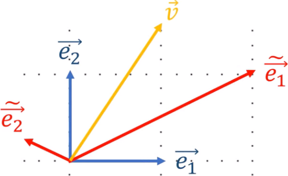
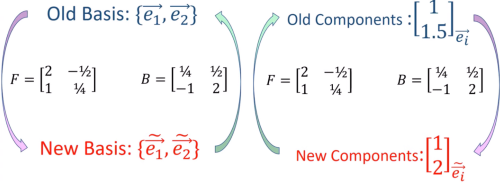

Tensors
Tensors respect two properties
Tensors are invariant under coordinate transformations
Tensor components obey given transformation laws under coordinate transformations.
Example of tensors are scalars (rank 0 tensors), vector (rank 1), matrices (rank 2).
An example of a) is the acceleration of gravity which is the physical object and always poins towards the center of the earth, no matter what coordinate system is used and similarly the stress tensor is the same function that maps the outward normal on a surface into the force on that surface, irrespective of the coordinate system used.
b) refers to the components of say a vector which depend on the the choice of basis. For instance the acceleration of gravity has the coordinate representation (g, 0, 0) in a coordinate system where the first basis vector points down, but has representation (0,g, 0) in a coordinate system where the second basis vector points down. Yet it remains the same physical object. The same for the strees tensor whose matrix representation of the tensor must change in a systematic way as the coordinate system changes.
Coordinate transformation
Consider two coordinate systems represented by the following two bases
Old Basis : {e1, e2}
New Basis : {ẽ1, ẽ2}
Such that
ẽ1 = 2e1 + 1 ⋅ e2
ẽ2 = −1/2⋅ e1 + 1/4 ⋅ e2
which can be expressed in matrix form as
To construct the old basis from the new basis we invert the matrix
we can generalize to n dimension and write
And for the backward transformation
Vector components
A vector, v is invariant under change of coordinates so it ca been written equally as
By replacing Eq. 8.1.1 in the first of the above equation we get
so the components of v, in the two basis transform as
Because vector components behave contrary to the basis vectors, we say vector components are contravariant. We'll see that vectors are contravariant tensors. We usually represent them as follows
which is sort of a reminder that they behave in opposite ways